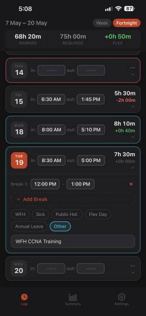
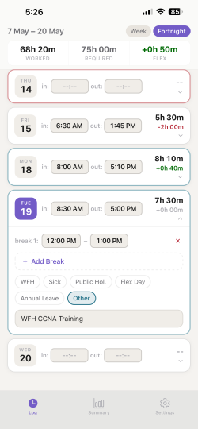
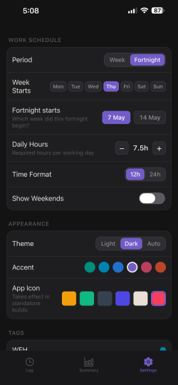

A private, offline iOS app for tracking work hours, breaks, flex-time and leave — without the sign-ups, subscriptions or surprises.

Every day, every break, every minute — laid out clean and ready to log. Tap a time, scroll a wheel, done.
Set your required hours and TimeTracker keeps a live running balance — across every day, every period, every roll-over.

Six accent colours. Five app icons. Light, dark or auto. Customise everything until TimeTracker feels like yours.

Every hour stays on your device. No tracking, no servers, no analytics. You own it. You export it. You delete it.
Quick answers to the things people usually ask.
A$2.99 one-off purchase on the App Store. No subscription, no in-app purchases, no ads — pay once and it's yours.
Completely. TimeTracker never makes a network request. Everything lives on your phone.
You set your required hours per day. Any time you log over that adds to your flex balance; any time under it subtracts. Take a flex day and it deducts a full day from the bank.
It can start any day you like. Same for fortnights — pick which week you're currently in.
Yes — share a CSV of any pay period straight to email, files, or anywhere else.
Restore from your iCloud device backup like any other iOS app and your data comes with you.